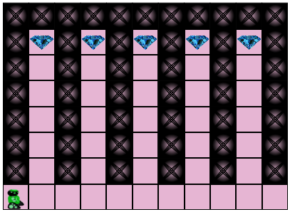
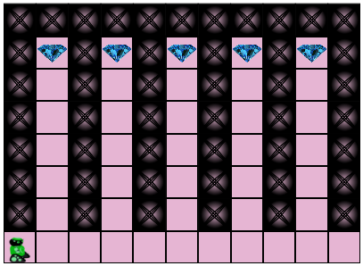
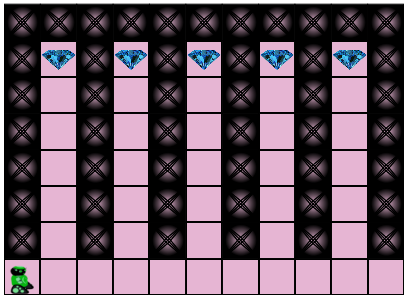

Collecter les pierres précieuses 3
 

Programmez le robot pour qu'il passe ramasser toutes les pierres précieuses. Il suffit que le robot soit sur la case pour qu'il collecte la pierre.
Vous pouvez avoir besoin de boucles imbriquées
Programmez le robot pour qu'il passe ramasser toutes les pierres précieuses. Il suffit que le robot soit sur la case pour qu'il collecte la pierre.
Vous pouvez avoir besoin de boucles imbriquées